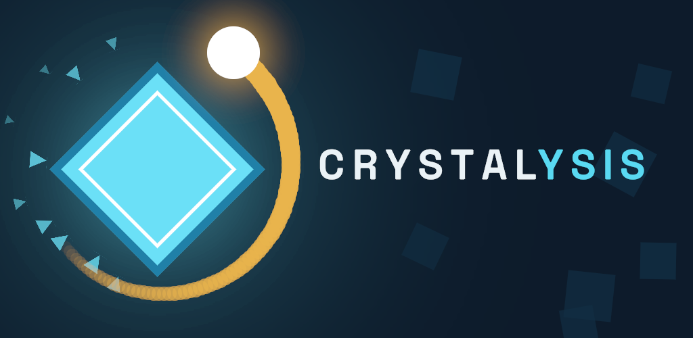

Álvaro Colom · game developer · Spain
I'm Álvaro. I make games from Spain, and I like the ones that take a genre and bend one rule until something else falls out. One is out so far.

A slingshot roguelite built on one rule: while you pull back to aim, the world holds its breath. Time only moves when your ball is in flight. Defend one crystal from endless waves with a ball that never dies but does slow down, and damage is speed.
A PC version of Crystalysis — the same game rebuilt for a landscape screen and a mouse, headed for Steam. After that, something new. I work on one thing at a time.
Twitter · itch.io · GitHub · trikyname@gmail.com
For press: everything you need is in the Crystalysis press kit — screenshots, a downloadable trailer and logos, free to use.